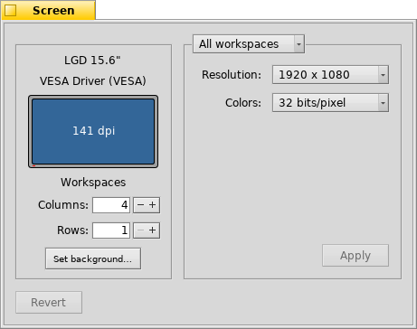

Português (Brazil)
Português (Brazil) Català
Català Deutsch
Deutsch English
English Español
Español Français
Français Italiano
Italiano Magyar
Magyar Polski
Polski Português
Português Română
Română Slovenčina
Slovenčina Suomi
Suomi Svenska
Svenska 中文 ［中文］
中文 ［中文］ Русский
Русский Українська
Українська 日本語
日本語 Tela
Tela
| Deskbar: | ||
| Localização: | /boot/system/preferences/Screen | |
| Definições: | ~/config/settings/system/app_server/workspaces ~/config/settings/kernel/drivers/vesa - Apenas quando executando em modo VESA. ~/config/settings/Screen_data - Armazena a posição da janela de diálogo. |
Cada um de seus espaços de trabalho pode ter a sua própria resolução, profundidade de cor e taxa de atualização.
O menu do topo especifica se suas mudanças são aplicadas apenas no espaço atual ou em todos os espaços. Dependendo de sua placa gráfica, os outros menus contém todas as definições de resoluções suportadas, profundidade de cor e taxa de amostragem.
Após clicar em , o modo gráfico é alterado e um alerta aparece, perguntando por manter ou cancelar as alterações. Se não responder àquele alerta, o modo gráfico reverte após 12 segundos para a definição anterior. Talvez não possa ver o alerta porque seu monitor não suporta a configuração.
There's a key combination that always works, not only when the Screen preferences are open: SHIFT CTRL ALT ESC sets a fall-back video safe mode. Handy if your monitor doesn't report its capabilities correctly and your settings result in a distorted or black screen. Here too, an alert pops up and if you do nothing for 12 seconds or press ESC you'll revert back.
À esquerda, vê-se a representação de sua tela com o fabricante e modelo que ela informa e sua resolução em pontos por polegada (dpi). Pairando o ponteiro do mouse sobre ela exibe uma dica com o nome da placa gráfica se for suportada pelo driver. Do contrário exibe "VESA", a rápida solução alternativa que funciona bem em todos os equipamentos.
retorna à definição que estava ativa quando iniciou as preferências da Tela.
No canto inferior esquerdo pode-se definir o número de espaços de trabalho e ordená-los em colunas ou filas e abrir as preferências de Papel de Parede.